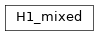

H1_mixed¶
full name: tenpy.algorithms.tdvp.H1_mixed
parent module:
tenpy.algorithms.tdvptype: class
Inheritance Diagram

Methods
|
Initialize self. |
|
-
class
tenpy.algorithms.tdvp.H1_mixed(Lp, Rp, W)[source]¶ Bases:
objectClass defining the one site Hamiltonian for Lanczos.
- Parameters
Lp (
tenpy.linalg.np_conserved.Array) – left part of the environmentRp (
tenpy.linalg.np_conserved.Array) – right part of the environmentM (
tenpy.linalg.np_conserved.Array) – MPO which is applied to the ‘p’ leg of theta
-
Lp¶ left part of the environment
-
Rp¶ right part of the environment
-
W¶ MPO which is applied to the ‘p0’ leg of theta